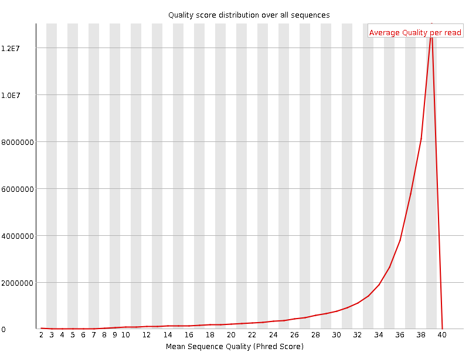
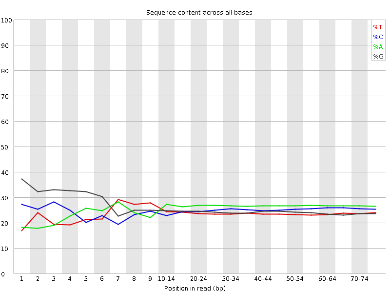
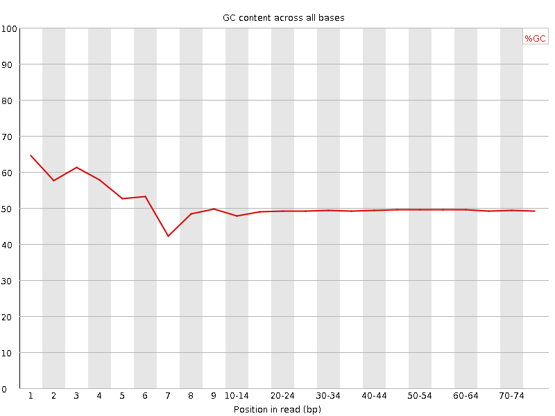
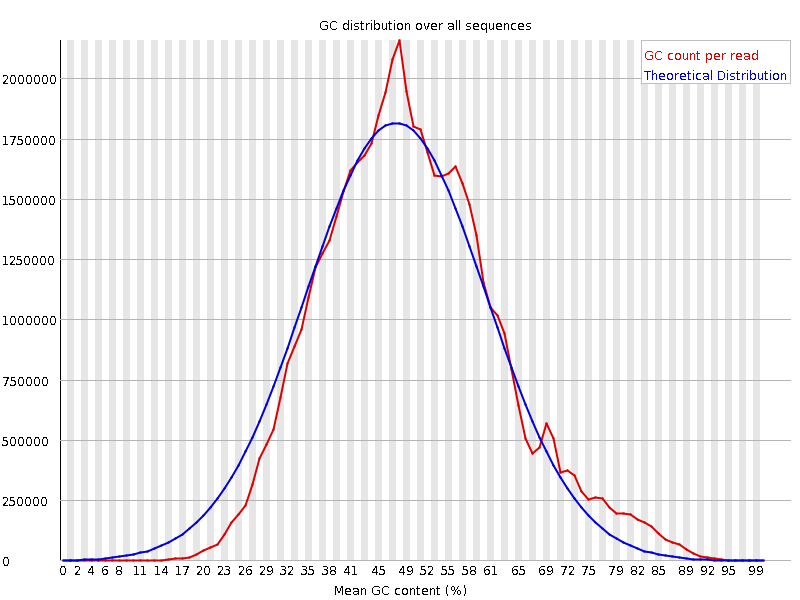
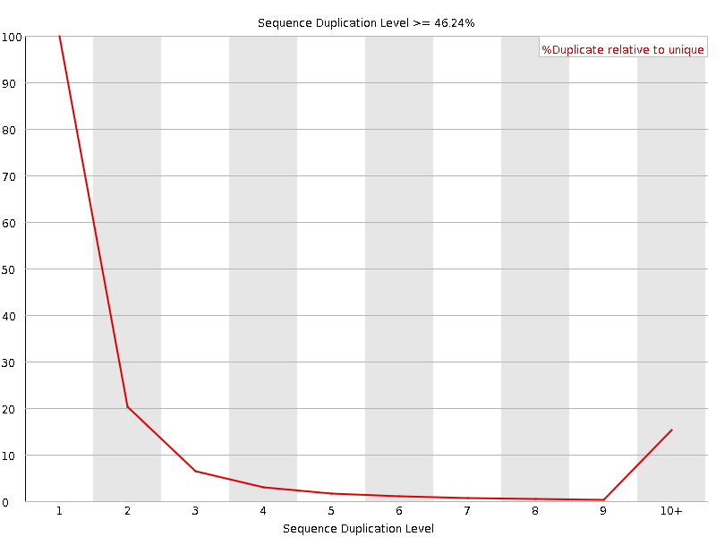
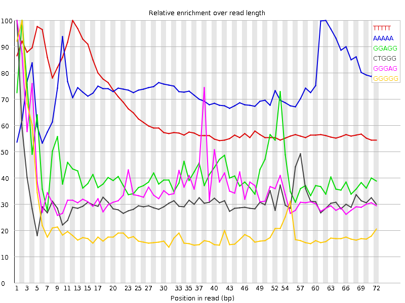

![[OK]](Icons/tick.png) Basic Statistics
Basic Statistics
| Measure | Value |
|---|---|
| Filename | SRR315305_1.fastq |
| File type | Conventional base calls |
| Encoding | Sanger / Illumina 1.9 |
| Total Sequences | 44873239 |
| Filtered Sequences | 0 |
| Sequence length | 76 |
| %GC | 49 |
Per base sequence quality

Per sequence quality scores

![[FAIL]](Icons/error.png) Per base sequence content
Per base sequence content

Per base GC content

Per sequence GC content

Per base N content

Sequence Length Distribution

![[WARN]](Icons/warning.png) Sequence Duplication Levels
Sequence Duplication Levels

Overrepresented sequences
| Sequence | Count | Percentage | Possible Source |
|---|---|---|---|
| GCTGGATAGTAGGTAGGGACAGTGGGAATCTCGTTCATCCATTCATGCGC | 124393 | 0.27720976415364174 | No Hit |
| GGTTGGTGCGCGGACACGCACTGCCTGCGTAACTAGAGGGAGCTGACGGA | 109436 | 0.24387809402392369 | No Hit |
| CGCTGGATAGTAGGTAGGGACAGTGGGAATCTCGTTCATCCATTCATGCG | 90325 | 0.20128923610796182 | No Hit |
| GGCGGGGGTGCGTCGGGTCTGCGAGAGCGCCAGCTATCCTGAGGGAAACT | 82059 | 0.1828684575232022 | No Hit |
| GTCGGCATGTATTAGCTCTAGAATTACCACAGTTATCCAAGTAGGAGAGG | 66042 | 0.14717457770320524 | No Hit |
| CTGGATAGTAGGTAGGGACAGTGGGAATCTCGTTCATCCATTCATGCGCG | 61698 | 0.13749397497247748 | No Hit |
| CTACGAATGGTTTAGCGCCAGGTTCCCCACGAACGTGCGGTGCGTGACGG | 56408 | 0.1257052115181612 | No Hit |
| CCGTCGGCATGTATTAGCTCTAGAATTACCACAGTTATCCAAGTAGGAGA | 54656 | 0.12180088003007762 | No Hit |
| GATCGGAAGAGCGGTTCAGCAGGAATGCCGAGACCGATATCGTATGCCGT | 51010 | 0.11367577009540139 | Illumina Paired End PCR Primer 2 (98% over 50bp) |
| CCCGTCGGCATGTATTAGCTCTAGAATTACCACAGTTATCCAAGTAGGAG | 47234 | 0.10526095519870986 | No Hit |
| GCTTGTTTGGAGGTTCTAGCAGGGGAGCGCAGCTACTCGTATACCCTTGA | 45350 | 0.10106246174919534 | No Hit |
Kmer Content

| Sequence | Count | Obs/Exp Overall | Obs/Exp Max | Max Obs/Exp Position |
|---|---|---|---|---|
| TTTTT | 9018315 | 3.7597032 | 5.717579 | 12 |
| AAAAA | 14015155 | 3.4013216 | 4.6024346 | 62 |
| GGAGG | 7778150 | 2.3703635 | 5.581735 | 2 |
| CTGGG | 6602705 | 2.2313697 | 7.0559874 | 1 |
| GGGAG | 7273405 | 2.2165442 | 6.103726 | 1 |
| GGGGG | 6359995 | 2.0517178 | 9.718915 | 2 |
| TTCAT | 5606915 | 1.9833452 | 6.3588533 | 42 |
| GCTGG | 5698620 | 1.9258361 | 7.8037095 | 1 |
| GCGCC | 5692060 | 1.8099908 | 5.540466 | 27 |
| GGGGA | 5808945 | 1.7702553 | 6.938428 | 1 |
| GGCGG | 5449340 | 1.7495246 | 7.039431 | 1 |
| GTGGG | 4705460 | 1.5978514 | 7.1568723 | 1 |
| CGGGG | 4913070 | 1.577354 | 7.641485 | 1 |
| GCGGG | 4752595 | 1.525833 | 6.157521 | 1 |
| TGGGG | 4240505 | 1.4399648 | 6.172003 | 2 |
| GTGGT | 3901800 | 1.3946743 | 5.165305 | 1 |
| GGGGT | 4014365 | 1.3631735 | 8.064932 | 3 |
| ATCCA | 4299110 | 1.2903249 | 5.1228967 | 37 |
| GGTGC | 3272830 | 1.1060457 | 5.8929024 | 5 |